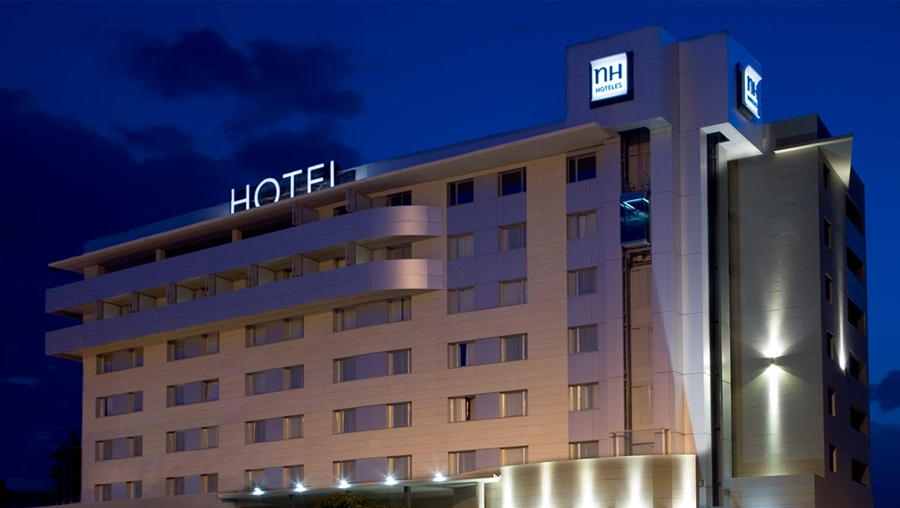
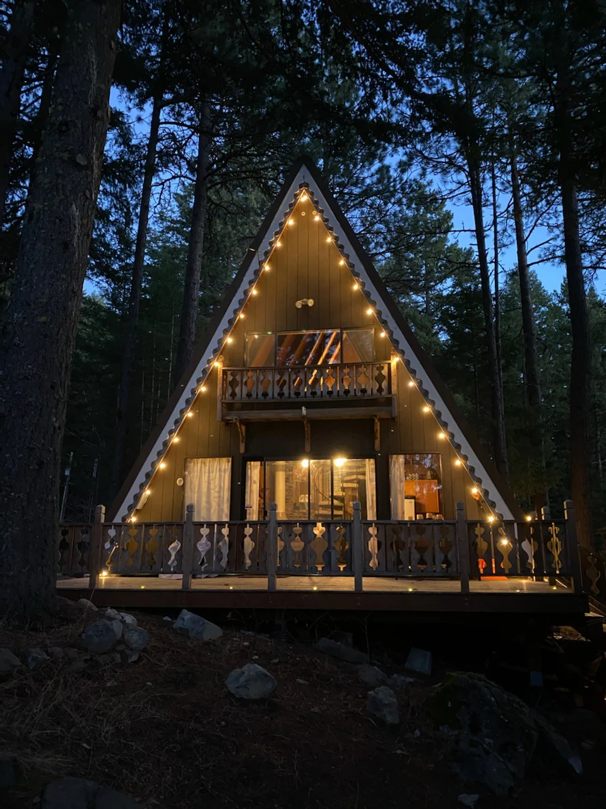
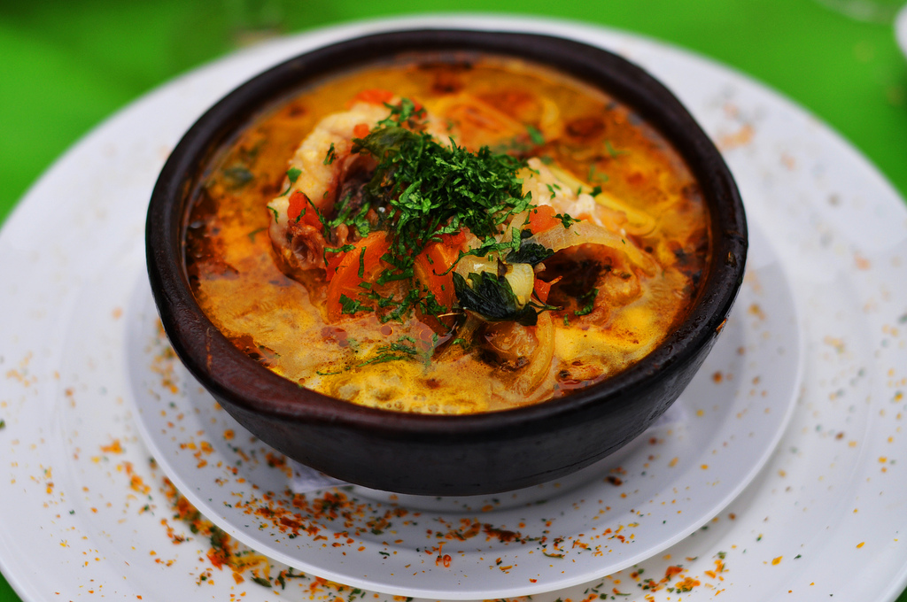
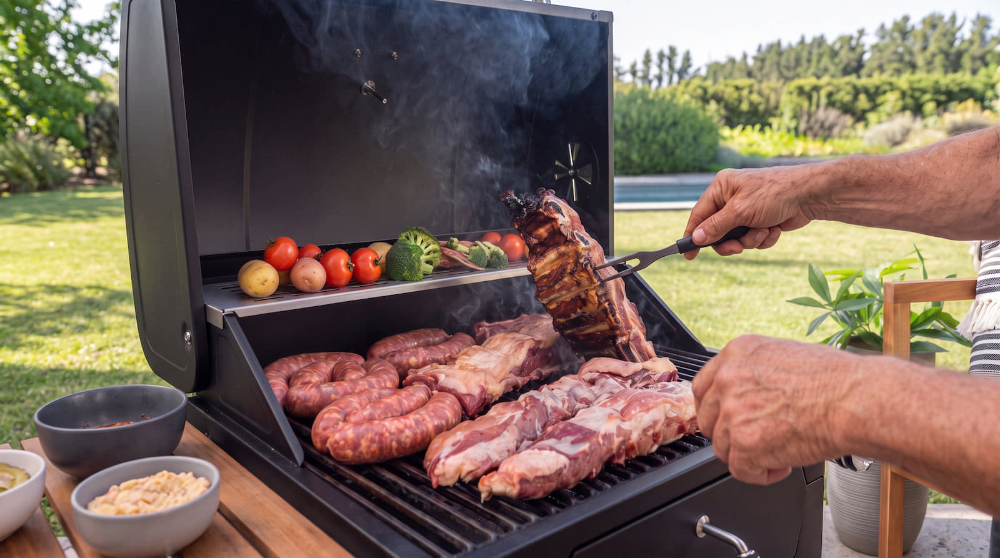
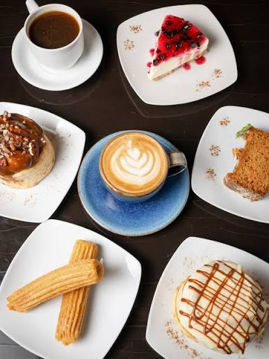

Refugio Alto Cielo
Cabañas de madera para cuatro personas con estufa a leña, terraza privada y desayuno campesino incluido. A 10 minutos a pie de los senderos principales.
ReservarDescansa con vista a las montañas y saborea la cocina de la zona. Te reunimos las mejores opciones de hospedaje, restaurantes y servicios turísticos de Destino Cordillera.
Cabañas de madera para cuatro personas con estufa a leña, terraza privada y desayuno campesino incluido. A 10 minutos a pie de los senderos principales.
Reservar
Hotel boutique con 24 habitaciones, spa con piscina termal, restaurante propio y transporte hacia los puntos de panorama más visitados.
Reservar
Cabañas simples y sitios de camping junto al río, con quincho compartido y agua caliente. Ideal para grupos y familias que buscan naturaleza al mejor precio.
Reservar
Cocina casera con productos de la zona: curanto de montaña, empanadas de queso de campo y sopa de cordero. Comedor rústico con chimenea.
Reservar mesa
Cordero al palo, costillas ahumadas y verduras de la huerta con vista directa a las cumbres. Terraza cubierta disponible todo el año.
Reservar mesa
Cafés de origen tostados en la comuna, kuchen casero de frambuesa y sándwiches de ruta para llevar. Terraza panorámica ideal para el almuerzo liviano.
Reservar mesa